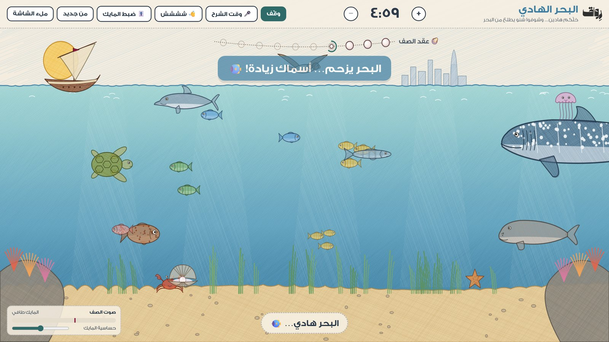

أدوات بسيطة للمعلمين والمعلمات، بروح قطرية. تفتحونها على شاشة الصف وتشتغل على طول. بدون حساب وبدون إعلانات.

البحر الهادي 🌊 جديد
يهدّي الصف بدون ما تعلّون صوتكم. كل ما كان الصف هادي… يطلع شي جديد من البحر: صافي، هامور، حمسة، أطوم، جالبوت… وإذا ارتفع الصوت، كل الأسماك تخاف وتتخبّى!
وكل ٣٠ ثانية هدوء… تطلع لولوة جديدة لـ«عقد الصف» 🦪